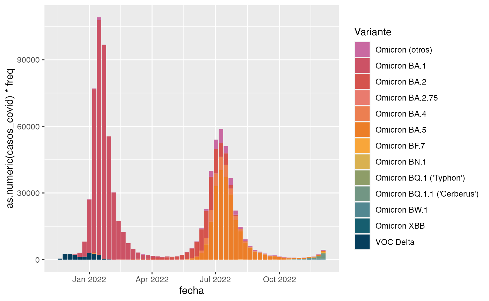
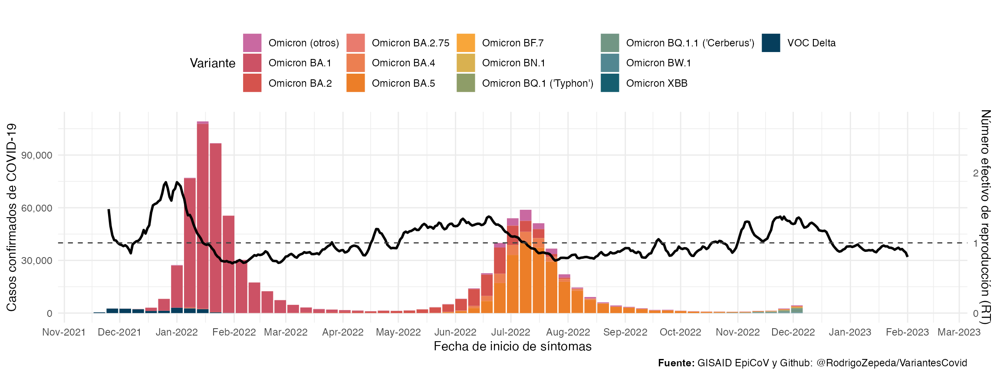
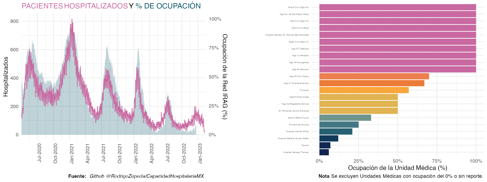
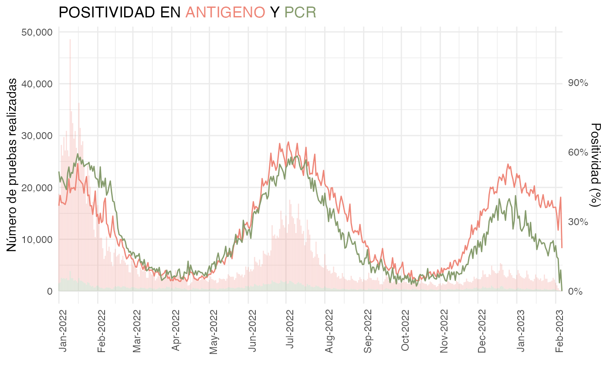
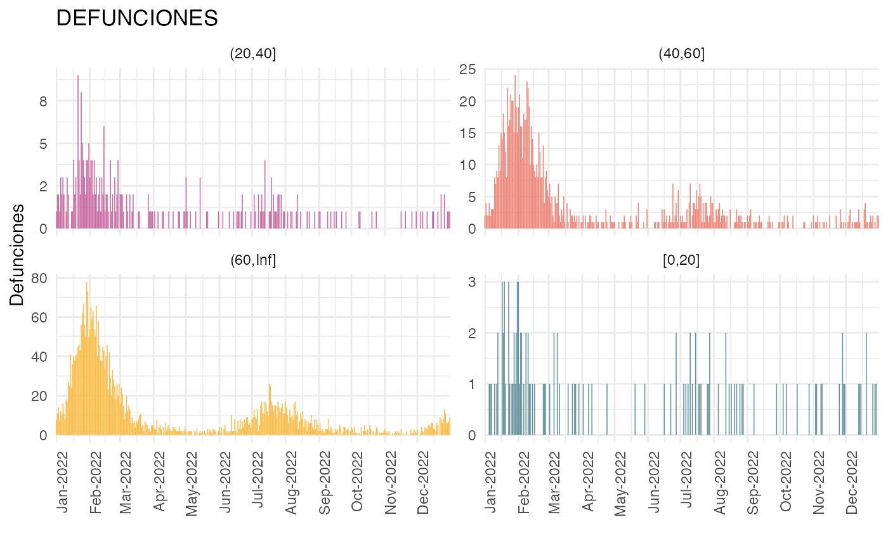

Estudio de caso: Ciudad de México
Rodrigo Zepeda
2022-10-17
Código:vignettes/articles/Estudio_de_Caso_CDMX.Rmd
Estudio_de_Caso_CDMX.RmdEn este artículo realizamos ejemplos de análisis que pueden
elaborarse con el paquete covidmx. El propósito será
generar el reporte que se presenta aquí:

Para ello lo primero que hacemos es cargar la libraría de
covidmx así como algunas librerías auxiliares para apoyar
las gráficas y el análisis de datos
library(covidmx) # remotes::install_github("RodrigoZepeda/covidmx")
library(lubridate) # Funciones para semana epidemiológica
library(tidyverse) # Análisis de datos
library(cowplot) # Juntar las gráficas con plot_grid
library(ggtext) # Generar las imágenes
library(glue) # Generar las imágenes
library(MetBrewer) # Paletas de colores Y descargamos los datos:
datos_covid <- descarga_datos_abiertos(show_warnings = FALSE)Casos semanales y número efectivo de reproducción
Comenzamos con el primer panel para lo cual necesitamos correr dos funciones: la de casos y la del número efectivo de reproducción. Calculamos ambos seleccionando la entidad y sólo los confirmados:
datos_covid <- datos_covid |>
#Calculamos los casos
casos(entidades = "CIUDAD DE MÉXICO",
group_by_entidad = FALSE,
tipo_clasificacion = "Confirmados COVID") |>
#Y calculamos el estima_rt
estima_rt(entidades = "CIUDAD DE MÉXICO",
min_date = as.Date("2021/11/20", format = "%Y/%m/%d"),
tipo_clasificacion = "Confirmados COVID",
method = "parametric_si", #Método de estimación del estima_rt
config = EpiEstim::make_config(
list(
mean_si = 3.5, #Media de tiempo del intervalo serial
std_si = 1.5 #Varianza de tiempo del intervalo serial
)
))Cada una de las bases de datos se encuentran dentro de
datos_covid con diferente nombre:
names(datos_covid)## [1] "dats" "disconnect" "dict" "casos" "estima_rt"Por otro lado descargamos los datos de variantes
variantes <- descarga_datos_variantes_GISAID("cdmx")Generamos entonces una base única a partir del
2021/11/20 que contenga información de variantes y
casos
#Limpiamos del estima_rt los últimas dos semanas porque se cae
datos_covid$estima_rt <- datos_covid$estima_rt |>
dplyr::filter(FECHA_SINTOMAS <= today() - weeks(2))
#Filtramos las fechas para coincidir con el RT
datos_covid$casos <- datos_covid$casos |>
dplyr::filter(FECHA_SINTOMAS >= as.Date("2021/11/20", format = "%Y/%m/%d"))
#Asignamos semana epidemiológica y año para la coloración y colapsamos por semana
datos_covid$casos <- datos_covid$casos |>
dplyr::mutate(SEMANA_EPI = lubridate::epiweek(FECHA_SINTOMAS)) |>
dplyr::mutate(ANIO_EPI = lubridate::epiyear(FECHA_SINTOMAS)) |>
dplyr::group_by(SEMANA_EPI, ANIO_EPI) |>
dplyr::summarise(n = sum(n), .groups = "keep")
#Unimos la información de variantes
datos_covid$casos <- datos_covid$casos |>
#Renombramos pues la base de variantes ya trae una n
dplyr::rename(casos_covid = n) |>
#Juntamos la info de variantes
dplyr::left_join(variantes,
by = c("SEMANA_EPI" = "semana", "ANIO_EPI" = "ano")) |>
#Truco para convertir semana epidemiológica en fecha
dplyr::left_join(
tibble::tibble(fecha = seq(lubridate::ymd("2021/11/20"),
lubridate::today(), by = "1 week")) |>
dplyr::mutate(SEMANA_EPI = lubridate::epiweek(fecha)) |>
dplyr::mutate(ANIO_EPI = lubridate::epiyear(fecha)),
by = c("SEMANA_EPI", "ANIO_EPI")
)Así se ve la base generada:
head(datos_covid$casos)## # A tibble: 6 × 9
## # Groups: SEMANA_EPI, ANIO_EPI [1]
## SEMANA_EPI ANIO_EPI casos_c…¹ variant n freq Actualizacion Fuente
## <dbl> <dbl> <dbl> <chr> <int> <dbl> <dttm> <chr>
## 1 1 2022 76728 Omicro… 5 0.00202 2022-10-14 12:55:51 GISAI…
## 2 1 2022 76728 Omicro… 5 0.00202 2022-10-14 12:55:51 GISAI…
## 3 1 2022 76728 Omicro… 10 0.00403 2022-10-14 12:55:51 GISAI…
## 4 1 2022 76728 Omicro… 15 0.00605 2022-10-14 12:55:51 GISAI…
## 5 1 2022 76728 VOC De… 85 0.0343 2022-10-14 12:55:51 GISAI…
## 6 1 2022 76728 Omicro… 2360 0.952 2022-10-14 12:55:51 GISAI…
## # … with 1 more variable: fecha <date>, and abbreviated variable name
## # ¹casos_covidHacemos la gráfica comenzando con unas barras con colores por variante
nvariants <- unique(datos_covid$casos$variant) |> length()
ggplot2::ggplot() +
ggplot2::geom_col(
ggplot2::aes(x = fecha,
y = as.numeric(casos_covid)*freq,
fill = variant), data = datos_covid$casos) +
ggplot2::scale_fill_manual("Variante",
values = MetBrewer::met.brewer("Cross", n = nvariants))
Sobreponemos el RT y agregamos formato
cdmx_rt <- ggplot() +
geom_col(aes(x = as.Date(fecha), y = as.numeric(casos_covid)*freq, fill = variant),
data = datos_covid$casos) +
#Se multiplica por 40,000 para andar cerca de la media de casos
geom_line(aes(x = as.Date(FECHA_SINTOMAS), 40000*`Median(R)`), data = datos_covid$estima_rt,
linetype = "solid", linewidth = 1) +
scale_fill_manual("Variante", values = met.brewer("Cross", n = nvariants)) +
labs(
x = "Fecha de inicio de síntomas",
y = "Casos confirmados de COVID-19",
title = "",
caption = "**Fuente:** GISAID EpiCoV y Github: @RodrigoZepeda/VariantesCovid"
) +
scale_y_continuous(labels = scales::label_comma(),
sec.axis = sec_axis(~ . / 40000,
name = "Número efectivo de reproducción (RT)")) +
theme_minimal() +
theme(
legend.position = "top",
plot.caption = element_markdown()
) +
geom_hline(aes(yintercept = 40000), linetype = "dashed", color = "gray25") +
coord_cartesian(xlim = c(min(datos_covid$casos$fecha), max(datos_covid$casos$fecha))) +
scale_x_date(date_breaks = "1 month", date_labels = "%b-%Y")
cdmx_rt
Ocupación hospitalaria y hospitalizaciones
Por otro lado descargamos la información de ocupación hospitalaria de la RED IRAG.
#Descarga de datos por estado
ocupacion_estado <- descarga_datos_red_irag("Estatal")
#Descargamos las unidades médicas
ocupacion_UM <- descarga_datos_red_irag("Unidad Médica")Obtenemos entonces las unidades médicas con mayor ocupación en la fecha más reciente:
ocupacion_UM <- ocupacion_UM |>
dplyr::filter(Estado == "Ciudad de México") |>
dplyr::filter(Fecha == max(Fecha))Por otro lado juntamos las bases de ocupación y de casos hospitalizados por fecha de ingreso
#Obtenemos la ocupación por estado
ocupacion_cdmx <- ocupacion_estado |>
dplyr::filter(Estado == "Ciudad de México") |>
dplyr::mutate(`Hospitalizados (%)` =
dplyr::if_else(`Hospitalizados (%)` > 100 | `Hospitalizados (%)` < 0,
NA_real_, `Hospitalizados (%)`))
#Y los casos hospitalizados por fecha de ingreso
datos_covid <- datos_covid |> casos(
entidades = "CIUDAD DE MÉXICO",
group_by_entidad = FALSE,
fecha_tipo = "Ingreso",
tipo_paciente = "HOSPITALIZADO",
list_name = "hospitalizados"
)
#Pegamos en la misma base
datos_covid$hospitalizados <- datos_covid$hospitalizados |>
dplyr::left_join(ocupacion_cdmx, by = c("FECHA_INGRESO" = "Fecha"))Finalmente realizamos la gráfica
#Obtenemos el máximo de pacientes para el reescalamiento
m_pacientes <- max(datos_covid$hospitalizados$n, na.rm = T) |> as.numeric()
#Obtenemos los colores
colores <- met.brewer("Cross")
#Reescalamos el porcentaje para que aparezca
plot_hospitalizados <- ggplot(datos_covid$hospitalizados) +
geom_area(aes(x = as.Date(FECHA_INGRESO), y = `Hospitalizados (%)`/100*m_pacientes),
fill = colores[8], alpha = 0.25) +
geom_line(aes(x = as.Date(FECHA_INGRESO), y = as.double(n)), color = colores[1]) +
theme_minimal() +
coord_cartesian(xlim = c(ymd("2020/04/02"), today())) +
scale_x_date(date_breaks = "3 months", date_labels = "%b-%Y", expand = c(0,0)) +
labs(
x = "",
y = "Hospitalizados",
title = glue("<span style='color:{colores[1]}'>PACIENTES HOSPITALIZADOS</span> Y ",
"<span style='color:{colores[8]}'>% DE OCUPACIÓN</span>"),
caption = glue("**Fuente:** _Github ",
"@RodrigoZepeda/CapacidadHospitalariaMX_")
) +
theme(
axis.text.x = element_text(angle = 90, hjust = 1),
plot.title = element_markdown(),
plot.caption = element_markdown()
) +
scale_y_continuous(labels = scales::label_comma(),
sec.axis = sec_axis(~ . / m_pacientes,
labels = scales::label_percent(),
name = "Ocupación de la Red IRAG (%)"))
plot_hospitalizadosPor otro lado graficamos la ocupación por unidad:
#Arreglamos como factor y quitamos los de cero ocupación
ocupacion_UM <- ocupacion_UM |>
mutate(`Unidad médica` = factor(`Unidad médica`,
levels = `Unidad médica`[order(`Hospitalizados (%)`)],
ordered = TRUE)) |>
dplyr::filter(`Hospitalizados (%)` > 0)
#Reescalamos el porcentaje para que aparezca
plot_ocupacion <- ggplot(ocupacion_UM) +
geom_col(aes(x = `Unidad médica`, y = `Hospitalizados (%)`/100, fill = `Hospitalizados (%)`)) +
labs(
x = "",
y = "Ocupación de la Unidad Médica (%)",
caption = "**Nota** Se excluyen Unidades Médicas con ocupación del 0% o sin reporte."
) +
theme_minimal() +
scale_fill_gradientn(colours = met.brewer("Cross", direction = -1)) +
coord_flip() +
theme(
legend.position = "none",
axis.text.y = element_text(size = 4),
plot.caption = element_markdown() ) +
scale_y_continuous(labels = scales::label_percent())
plot_ocupacion
Podemos conjuntar ambos en un solo gráfico con
cowplot:
plot_hosp <- plot_grid(plot_hospitalizados, ggplot() + theme_void(), plot_ocupacion, ncol = 3,
rel_widths = c(1, 0.1, 1))
plot_hosp
Positividad
Generamos la gráfica de positividad donde además se coloque el número de pruebas por semana. Para ello calculamos tanto la positividad como el número de pruebas:
datos_covid <- datos_covid |>
#Calculamos también la positividad
positividad(
entidades = "CIUDAD DE MÉXICO",
group_by_entidad = FALSE,
tipo_prueba = c("Antigeno", "PCR"),
group_by_tipo_prueba = TRUE
)Generamos la gráfica de positividad distinguiendo por tipo de prueba:
#Nos quedamos sólo a partir de 2022
datos_covid$positividad <- datos_covid$positividad |>
dplyr::filter(year(FECHA_SINTOMAS) >= 2022)
#Para poner al nivel
mpruebas <- max(datos_covid$positividad$n_pruebas) |> as.numeric()
positividad_plot <- ggplot(datos_covid$positividad) +
geom_col(aes(x = as.Date(FECHA_SINTOMAS),
y = as.numeric(n_pruebas),
fill = TIPO_PRUEBA), alpha = 0.25) +
geom_line(aes(x = as.Date(FECHA_SINTOMAS),
y = Positividad*mpruebas, color = TIPO_PRUEBA)) +
theme_minimal() +
scale_x_date(date_breaks = "1 month", date_labels = "%b-%Y", expand = c(0,0)) +
labs(
x = "",
y = "Número de pruebas realizadas",
title = glue("POSITIVIDAD EN ",
"<span style='color:{colores[3]}'>ANTIGENO</span> Y ",
"<span style='color:{colores[6]}'>PCR</span>")
) +
scale_y_continuous(labels = scales::label_comma(),
sec.axis = sec_axis(~ . / mpruebas,
labels = scales::label_percent(),
name = "Positividad (%)")) +
scale_fill_manual("Tipo de prueba", values = c(colores[3], colores[6])) +
scale_color_manual("Tipo de prueba", values = c(colores[3], colores[6])) +
theme(
axis.text.x = element_text(angle = 90, hjust = 1),
legend.position = "none",
plot.title = element_markdown()
)
positividad_plot
Mortalidad
Por último generamos la gráfica de defunciones. Para ello tomamos la
misma función que en casos pero con defunciones = TRUE en 4
grupos de edad:
#Calculamos las defunciones por grupo de edad
datos_covid <- datos_covid |>
casos(
entidades = "CIUDAD DE MÉXICO",
group_by_entidad = FALSE,
defunciones = TRUE,
fecha_tipo = "Defunción",
edad_cut = c(0, 20, 40, 60, Inf),
list_name = "defunciones"
)
#Nos quedamos sólo con 2022
datos_covid$defunciones <- datos_covid$defunciones |>
dplyr::filter(year(FECHA_DEF) == 2022)
plot_defunciones <- ggplot(datos_covid$defunciones) +
geom_col(aes(x = as.Date(FECHA_DEF), y = as.numeric(n), fill = EDAD_CAT)) +
facet_wrap(~EDAD_CAT, scales = "free_y") +
theme_minimal() +
labs(
x = "",
y = "Defunciones",
title = "DEFUNCIONES"
) +
scale_fill_manual(values = met.brewer("Cross", 4)) +
scale_y_continuous(labels = scales::label_comma(accuracy = 1)) +
scale_x_date(date_breaks = "1 month", date_labels = "%b-%Y", expand = c(0,0)) +
theme(
axis.text.x = element_text(angle = 90, hjust = 1),
legend.position = "none"
)
plot_defunciones
Finalmente unimos este panel con el de positividad
plot_defun_pos <- plot_grid(positividad_plot, ggplot() + theme_void(), plot_defunciones,
rel_widths = c(1, 0.1, 1), ncol = 3)
plot_defun_pos
Generación del reporte
Finalmente juntamos todas las gráficas en un solo grid, agregamos el título:
#Juntamos los plots
gráfica_sin_titulo <- plot_grid(cdmx_rt, plot_hosp, plot_defun_pos, ncol = 1)
#Agregamos título
plot_title <- ggdraw() + draw_label("CIUDAD DE MÉXICO", fontface='bold', size = 40)Y ¡magia! quedó la gráfica que elaboramos con los datos del paquete
Información adicional
sessioninfo::session_info()## ─ Session info ───────────────────────────────────────────────────────────────
## setting value
## version R version 4.2.1 (2022-06-23)
## os macOS Big Sur ... 10.16
## system x86_64, darwin17.0
## ui X11
## language es
## collate en_US.UTF-8
## ctype en_US.UTF-8
## tz America/Mexico_City
## date 2022-10-17
## pandoc 2.19.2 @ /Applications/RStudio.app/Contents/MacOS/quarto/bin/tools/ (via rmarkdown)
##
## ─ Packages ───────────────────────────────────────────────────────────────────
## package * version date (UTC) lib source
## assertthat 0.2.1 2019-03-21 [2] CRAN (R 4.2.0)
## backports 1.4.1 2021-12-13 [2] CRAN (R 4.2.0)
## bit 4.0.4 2020-08-04 [2] CRAN (R 4.2.0)
## bit64 4.0.5 2020-08-30 [2] CRAN (R 4.2.0)
## bitops 1.0-7 2021-04-24 [2] CRAN (R 4.2.0)
## blob 1.2.3 2022-04-10 [2] CRAN (R 4.2.0)
## broom 1.0.1 2022-08-29 [2] CRAN (R 4.2.0)
## bslib 0.4.0 2022-07-16 [2] CRAN (R 4.2.0)
## cachem 1.0.6 2021-08-19 [2] CRAN (R 4.2.0)
## cellranger 1.1.0 2016-07-27 [2] CRAN (R 4.2.0)
## cli 3.4.1 2022-09-23 [2] CRAN (R 4.2.0)
## coarseDataTools 0.6-6 2021-12-09 [2] CRAN (R 4.2.0)
## coda 0.19-4 2020-09-30 [2] CRAN (R 4.2.0)
## colorspace 2.0-3 2022-02-21 [2] CRAN (R 4.2.0)
## covidmx * 0.7.1.2000 2022-10-17 [1] local
## cowplot * 1.1.1 2020-12-30 [2] CRAN (R 4.2.0)
## crayon 1.5.2 2022-09-29 [2] CRAN (R 4.2.0)
## curl 4.3.3 2022-10-06 [2] CRAN (R 4.2.0)
## DBI 1.1.3 2022-06-18 [2] CRAN (R 4.2.0)
## dbplyr 2.2.1 2022-06-27 [2] CRAN (R 4.2.0)
## desc 1.4.2 2022-09-08 [2] CRAN (R 4.2.0)
## digest 0.6.29 2021-12-01 [2] CRAN (R 4.2.0)
## dplyr * 1.0.10 2022-09-01 [2] CRAN (R 4.2.0)
## duckdb 0.5.1 2022-09-20 [2] CRAN (R 4.2.0)
## ellipsis 0.3.2 2021-04-29 [2] CRAN (R 4.2.0)
## EpiEstim 2.2-4 2021-01-07 [2] CRAN (R 4.2.0)
## evaluate 0.17 2022-10-07 [2] CRAN (R 4.2.0)
## fansi 1.0.3 2022-03-24 [2] CRAN (R 4.2.0)
## farver 2.1.1 2022-07-06 [2] CRAN (R 4.2.0)
## fastmap 1.1.0 2021-01-25 [2] CRAN (R 4.2.0)
## fitdistrplus 1.1-8 2022-03-10 [2] CRAN (R 4.2.0)
## forcats * 0.5.2 2022-08-19 [2] CRAN (R 4.2.0)
## fs 1.5.2 2021-12-08 [2] CRAN (R 4.2.0)
## gargle 1.2.1 2022-09-08 [2] CRAN (R 4.2.0)
## generics 0.1.3 2022-07-05 [2] CRAN (R 4.2.0)
## ggplot2 * 3.3.6 2022-05-03 [2] CRAN (R 4.2.0)
## ggtext * 0.1.2 2022-09-16 [2] CRAN (R 4.2.0)
## glue * 1.6.2 2022-02-24 [2] CRAN (R 4.2.0)
## googledrive 2.0.0 2021-07-08 [2] CRAN (R 4.2.0)
## googlesheets4 1.0.1 2022-08-13 [2] CRAN (R 4.2.0)
## gridExtra 2.3 2017-09-09 [2] CRAN (R 4.2.0)
## gridtext 0.1.5 2022-09-16 [2] CRAN (R 4.2.0)
## gtable 0.3.1 2022-09-01 [2] CRAN (R 4.2.0)
## haven 2.5.1 2022-08-22 [2] CRAN (R 4.2.0)
## highr 0.9 2021-04-16 [2] CRAN (R 4.2.0)
## hms 1.1.2 2022-08-19 [2] CRAN (R 4.2.0)
## htmltools 0.5.3 2022-07-18 [2] CRAN (R 4.2.0)
## httr 1.4.4 2022-08-17 [2] CRAN (R 4.2.0)
## incidence 1.7.3 2020-11-04 [2] CRAN (R 4.2.0)
## jquerylib 0.1.4 2021-04-26 [2] CRAN (R 4.2.0)
## jsonlite 1.8.2 2022-10-02 [2] CRAN (R 4.2.0)
## knitr 1.40 2022-08-24 [2] CRAN (R 4.2.0)
## labeling 0.4.2 2020-10-20 [2] CRAN (R 4.2.0)
## lattice 0.20-45 2021-09-22 [2] CRAN (R 4.2.1)
## lifecycle 1.0.3 2022-10-07 [2] CRAN (R 4.2.1)
## lubridate * 1.8.0 2021-10-07 [2] CRAN (R 4.2.0)
## magrittr 2.0.3 2022-03-30 [2] CRAN (R 4.2.0)
## markdown 1.1 2019-08-07 [2] CRAN (R 4.2.0)
## MASS 7.3-58.1 2022-08-03 [2] CRAN (R 4.2.0)
## Matrix 1.5-1 2022-09-13 [2] CRAN (R 4.2.0)
## MatrixModels 0.5-1 2022-09-11 [2] CRAN (R 4.2.0)
## mcmc 0.9-7 2020-03-21 [2] CRAN (R 4.2.0)
## MCMCpack 1.6-3 2022-04-13 [2] CRAN (R 4.2.0)
## memoise 2.0.1 2021-11-26 [2] CRAN (R 4.2.0)
## MetBrewer * 0.2.0 2022-03-21 [2] CRAN (R 4.2.0)
## modelr 0.1.9 2022-08-19 [2] CRAN (R 4.2.0)
## munsell 0.5.0 2018-06-12 [2] CRAN (R 4.2.0)
## pillar 1.8.1 2022-08-19 [2] CRAN (R 4.2.0)
## pins 1.0.3 2022-09-24 [2] CRAN (R 4.2.0)
## pkgconfig 2.0.3 2019-09-22 [2] CRAN (R 4.2.0)
## pkgdown 2.0.6 2022-07-16 [2] CRAN (R 4.2.0)
## plyr 1.8.7 2022-03-24 [2] CRAN (R 4.2.0)
## png 0.1-7 2013-12-03 [2] CRAN (R 4.2.0)
## purrr * 0.3.5 2022-10-06 [2] CRAN (R 4.2.1)
## quantreg 5.94 2022-07-20 [2] CRAN (R 4.2.0)
## R6 2.5.1 2021-08-19 [2] CRAN (R 4.2.0)
## ragg 1.2.3 2022-09-29 [2] CRAN (R 4.2.0)
## rappdirs 0.3.3 2021-01-31 [2] CRAN (R 4.2.0)
## Rcpp 1.0.9 2022-07-08 [2] CRAN (R 4.2.0)
## RCurl 1.98-1.9 2022-10-03 [2] CRAN (R 4.2.1)
## readr * 2.1.3 2022-10-01 [2] CRAN (R 4.2.0)
## readxl 1.4.1 2022-08-17 [2] CRAN (R 4.2.0)
## reprex 2.0.2 2022-08-17 [2] CRAN (R 4.2.0)
## reshape2 1.4.4 2020-04-09 [2] CRAN (R 4.2.0)
## rlang 1.0.6 2022-09-24 [2] CRAN (R 4.2.0)
## rmarkdown 2.17 2022-10-07 [2] CRAN (R 4.2.0)
## rprojroot 2.0.3 2022-04-02 [2] CRAN (R 4.2.0)
## rstudioapi 0.14 2022-08-22 [2] CRAN (R 4.2.0)
## rvest 1.0.3 2022-08-19 [2] CRAN (R 4.2.0)
## sass 0.4.2 2022-07-16 [2] CRAN (R 4.2.0)
## scales 1.2.1 2022-08-20 [2] CRAN (R 4.2.0)
## sessioninfo 1.2.2 2021-12-06 [2] CRAN (R 4.2.0)
## SparseM 1.81 2021-02-18 [2] CRAN (R 4.2.0)
## stringi 1.7.8 2022-07-11 [2] CRAN (R 4.2.0)
## stringr * 1.4.1 2022-08-20 [2] CRAN (R 4.2.0)
## survival 3.4-0 2022-08-09 [2] CRAN (R 4.2.0)
## systemfonts 1.0.4 2022-02-11 [2] CRAN (R 4.2.0)
## textshaping 0.3.6 2021-10-13 [2] CRAN (R 4.2.0)
## tibble * 3.1.8 2022-07-22 [2] CRAN (R 4.2.0)
## tidyr * 1.2.1 2022-09-08 [2] CRAN (R 4.2.0)
## tidyselect 1.2.0 2022-10-10 [2] CRAN (R 4.2.0)
## tidyverse * 1.3.2 2022-07-18 [2] CRAN (R 4.2.0)
## tzdb 0.3.0 2022-03-28 [2] CRAN (R 4.2.0)
## utf8 1.2.2 2021-07-24 [2] CRAN (R 4.2.0)
## vctrs 0.4.2 2022-09-29 [2] CRAN (R 4.2.0)
## vroom 1.6.0 2022-09-30 [2] CRAN (R 4.2.0)
## withr 2.5.0 2022-03-03 [2] CRAN (R 4.2.0)
## xfun 0.33 2022-09-12 [2] CRAN (R 4.2.0)
## xml2 1.3.3 2021-11-30 [2] CRAN (R 4.2.0)
## yaml 2.3.5 2022-02-21 [2] CRAN (R 4.2.0)
##
## [1] /private/var/folders/42/2kdf45dd1qz5n7kf9lm8ld9r0000gn/T/RtmpjpWcih/temp_libpath1368c453c3e00
## [2] /Library/Frameworks/R.framework/Versions/4.2/Resources/library
##
## ──────────────────────────────────────────────────────────────────────────────